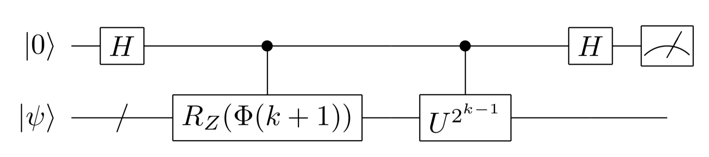

7-1. Quantum Phase Estimation Algorithm in Detail:Application to Hydrogen Molecule as an Example¶
In this section, we review the Quantum Phase Estimation (QPE) algorithm and try to find the eigenvalues of the Hamiltonian of a quantum many-body system (hydrogen molecule) using QPE. In the process, we will learn in detail the flow and techniques for applying QPE to real problems.
Review of Phase Estimation¶
As we have already learned in 2-4. Phase estimation algorithm (introductory), given a unitary matrix \(U\), QPE extracts its eigenvalues \(e^{i \lambda}\) as bit strings. By using QPE as a subroutine, it is expected that many problems such as prime factorization and quantum many-body energy calculation (which can be reduced to the eigenvalue problem of unitary matrices) can be solved much faster than classical computers.
Let us recall the transformation of QPE specifically. Let \(| u_i \rangle\) be the eigenvector corresponding to the \(i\)-th eigenvalue \(e^{i \lambda_i}\) of \(U\) (\(U | u_i \rangle = e^{i \lambda_i} | u_i \ rangle\)). At this time, using the control unitary operation \(\Lambda (U)\) and the quantum Fourier transform, the QPE realizes the following transform.
where \(| 0 \rangle{}^{\otimes{t}}\) are \(t\) auxiliary qubits and \(\tilde{\lambda_i}=j_1j_2 \ldots j_t\) is a bit string that is binary expression of \(\lambda_i\) up to the \(t\)th digit
(The \((t+1)\) th digit and after are omitted.)
To run this QPE on practical problems, it is believed that a quantum computer with error correction is required (long-term algorithm). The main reason is
number of auxiliary bits
complexity of control unitary gate \(\Lambda (U^{2^{k-1}})\) (\(k =1, ..., t\))
First, regarding the number of ancillary bits, for example, 50 or more ancillary bits are required to obtain \(\lambda_i\) with the precision of double-precision real numbers used in modern classical computers. And with such a large number of ancillary bits (i.e. large \(t\) ), the control unitary gate \(\Lambda (U^{2^{k-1}})\) (\(k =1, ..., t\)) for very large powers of \(U\). The difficulty of preparing such a control gate depends on what kind of matrix you consider for \(U\) , but in general it is not easy:
As we will see later, in the case of the eigenvalue problem of the Hermitian matrix \(H\), which is one of the most promising applications of QPE, \(U\) is the time evolution operator by \(H\). That is, $ U = e^{-iH:nbsphinx-math:tau}$ (where \(\tau\) is a constant). Therefore, the large power of \(U\) means simulating development of \(H\) for a long time (exponential to the reciprocal of precision). This is very difficult.
Iterative Quantum Phase Estimation¶
In fact, if we’re only interested in the eigenvalues of \(U\) and don’t need the eigenstates, we can reduce the QPE ancillary bits. This is called Iterative Quantum Phase Estimation (IQPE),(https://journals.aps.org/pra/abstract/10.1103/PhysRevA.76.030306) ,and is equivalent the method introduced in the section “Introduction: Improving the Hadamard test” of chapter 2-4, I will describe it here again.
IQPE is a method of deterministically obtaining bit strings of binary expansion of eigenvalues for each digit. Only one auxiliary bit is required, and one digit value (\(j_k\)) of the eigenvalue binary decimal representation \(0.j_1...j_t\) is obtained for each iteration. The steps are (\(k = t, t-1, \ldots, 1\)):
\(k = t\)¶
Put a Hadamard gate on the auxiliary bit
Multiply the ancillary bits by \(\Lambda (U^{2^{t-1}})\)
Apply a Hadamard gate to the auxiliary bit and measure
Reflect the measurement result \(j_t\) to the accumulation phase \(\Phi(t)\): \(\Phi(t)\): \(\Phi(t) = \pi \cdot \frac{j_t}{2} = \pi 0. j_t\)
\(k = t-1, t-2, \ldots, 1\)¶
Apply a Hadamard gate to the auxiliary bit
Apply Z rotation gate \(R_Z ( \Phi(k+1) )\) to the auxiliary bit (where \(R_Z(\theta)=e^{i\theta/2 Z}, \Phi(k+1) = \ pi 0.j_{k+1} j_{k+2} \ldots j_{t}\))
Multiply the ancillary bits by \(\Lambda (U^{2^{k-1}})\)
Apply a Hadamard gate to the auxiliary bit and measure
Refleat the measurement result \(j_k\) to the accumulation phase \(\Phi(k)\):
After measuring all \(j_k\) (\(k = t, t-1, \ldots, 1\))¶
We get the desired phase.
Example: Calculation of the ground state energy of the hydrogen molecular Hamiltonian using the quantum phase estimation algorithm¶
Let’s calculate the ground state energy of the hydrogen molecule using the above iterative phase estimation algorithm (the following content is based on the paper [1]).
As we learned in Section 4-1 and Section 6-1, the ground state energy of the hydrogen molecule is the smallest eigenvalue of Hamiltonian \(H\). In QPE and IQPE, the eigenvalue problem of Hamiltonian \(H\) is solved by finding the eigenvalues of its time evolution operator \(U = e^{−iH \tau}\).
Here, \(E_{\text{min}} and E_{\text{max}}\) are the smallest and largest eigenvalues. \(\tau\) is some constant and is set so that \([ E_{\text{min}}, E_{\text{max}}]\) fit in \([0, 2\pi]\). (add a constant shift if necessary). Although in QPE and IQPE, the phase of the eigenvalue of \(U\) has \(2\pi\) ambiguity, the eigenvalues of \(H\) can be uniquely restored from the eigenvalues of \(U\) this way.
The steps required to calculate the basis energy are:
(Reduce Hamiltonian size using symmetry etc.)
Accurate approximation of Hamiltonian time evolution operator \(U=e^{-iH\tau}\)
Decompose the control time evolution operator into a gate set that can be easily executed on a quantum computer and implement it
Prepare an initial state with sufficient overlap with the ground state
Measuring energy eigenvalues with IQPE
A detailed explanation of the method and an implementation example are given below.
0. (Reduce Hamiltonian size using symmetry etc.)¶
This step is necessary to reduce resources as much as possible when actually running IQPE on a simulator or on a real machine, and is not theoretically essential. For details, refer to reference [1], but if we map the second quantized Hamiltonian of the hydrogen molecule (STO-6G basis) to the qubit system by the Bravyi-Kitaev transformation, we get a 4qubit Hamiltonian = \(16 \times 16\) matrix. However, if we partially diagonalize the Hamiltonian using the symmetry of the Hamiltonian (such as the law of conservation of the number of electrons), we can get the ground state with 2 qubits, and the Hamiltonian has only 6 kinds of terms as follows.
where the coefficient \(g_i\) is a real number and its value depends on the interatomic distance (arrangement) of hydrogen molecules. Readers unfamiliar with chemistry should just understand that the above Hermitian matrix corresponding to the hydrogen molecule exists and that it is important to find the minimum eigenvalue of it.
1. Accurate approximation of Hamiltonian time evolution operator \(U=e^{-iH\tau}\)¶
To implement the control unitary operation \(\Lambda (U^{2^k})\) used in IQPE, we first implement the time evolution operator \(U = e^{−iH \tau}\) in a quantum circuit. First, noting that the constant terms \(g_0 I\) and \(g_3 Z_0 Z_1\) commute with all other terms in the Hamiltonian, \(U\) becomes
Here, \(H_{\text{eff}}\) is
Since the contributions of \(g_0 I\) and \(g_3 Z_0 Z_1\) to the eigenvalues of the parts can easily be added later, in the following we calculate the eigenvalues of \(H_{\textrm{eff}}\) using IQPE of \(U_{\text{eff}} := e^{−i H_{\text{eff}} \, \tau}\) .
Trotter decomposition of \(U_{\text{eff}}\) is
Each term of the product appearing in \(U_{\text{Trot}}^{(N)}\) is a multi-qubit Pauli rotation gate, that is, the exponential function of the Pauli matrix product \(\exp(i\theta P)\) , making it easy to implement as a product of simple quantum gates. Now we have approximately implemented \(U_{\textrm{eff}}\) on a quantum circuit.
Let’s examine the errors in this approximation. When we do a rough analytical evaluation, we have [2]
この表式によると、欲しい精度 \(\epsilon\) に対して \(N \sim \tau^2/\epsilon\) 程度の大きさの \(N\) をとれば良い事が分かる。
According to this expression, it is possible to take \(N\) with a size of about \(N \sim \tau^2/\epsilon\) for the desired precision \(\epsilon\).
今回取り扱う系は \(4 \times 4\) という小さい行列で表されるので、\(H_{\textrm{eff}}\) を実際に厳密に対角化してみてその最小固有値 \(E_{\textrm{min}}\) を求め、\(U_{\textrm{Trot}}^{(N)}\) の固有値 \(e^{i \lambda_{\textrm{Trot}}\tau}\) の \(\lambda_{\textrm{Trot}}\) と比較してみよう。
Since the system we are dealing with here is represented by a small matrix of \(4 \times 4\), let’s diagonalize \(H_{\textrm{eff}}\) exactly and find its minimum eigenvalue \(E_{\textrm{min}}\), and compare it with \(\lambda_{\textrm{Trot}}\) of \(e^{i \lambda_{\textrm{Trot}}\tau}\) which is the eigenvalue of \(U_{\textrm{Trot}}^{(N)}\).
First, we diagonize \(H_{\textrm{eff}}\). The unit of energy used is Hartree (Ha).
[1]:
from functools import reduce
import numpy as np
from numpy.linalg import matrix_power, eig
from scipy.sparse.linalg import eigsh
from openfermion.ops import QubitOperator
from openfermion.linalg import get_sparse_operator #If you have an error, please update openfermion later than version 1.0.0
from qulacs import QuantumState, Observable, QuantumCircuit
import matplotlib.pyplot as plt
## Run only in Google Colaboratory or (Linux or Mac) jupyter notebook environment
## Qulacs errors will be output normally.
!pip3 install wurlitzer
%load_ext wurlitzer
[2]:
def hamiltonian_eff():
"""
distance = 0.70 A
removed 'I' and 'Z0 Z1' terms, which add up to -1.31916027
"""
n_qubits = 2
g_list = [0.3593, 0.0896, -0.4826, 0.0896] ## taken from table 1 of paper [1]
pauli_strings = ['Z0', 'Y0 Y1', 'Z1', 'X0 X1']
hamiltonian = QubitOperator()
for g, h in zip(g_list, pauli_strings):
hamiltonian += g * QubitOperator(h)
sparse_matrix = get_sparse_operator(hamiltonian, n_qubits=n_qubits)
vals, vecs = eigsh(sparse_matrix, k=1, which='SA') ## only smallest eigenvalue and eigenvector are calculated
return sparse_matrix, vals
[3]:
_, eigs = hamiltonian_eff()
exact_eigenvalue = eigs[0]
print('exact_eigenvalue: {:.10f} Ha'.format(exact_eigenvalue)) ## print eigenvalue up to 10 digits after decimal point
exact_eigenvalue: -0.8607602744 Ha
Next, we diagonize \(U_{\textrm{Trot}}^{(N)}\). Later, we implement \(U_{\textrm{Trot}}^{(N)}\) as a quantum circuit. Here, we calculate it by using the following formula which holds true when \(H_i^2 = I\)
Then, find the \(\lambda_{\textrm{Trot}}\) of the eigenvalue \(e^{-i \lambda_{\textrm{Trot}}\tau}\) of \(U_{\textrm{Trot}}^{(N)}\) at \(N = 1, 3, \ldots, 9\) and compare it with \(E_{\textrm{min}}\).
[4]:
def order_n_trotter_approx(t, n_trotter_steps):
"""
ordering: 'Z0', 'Y0 Y1', 'Z1', 'X0 X1'
Returns:
sparse_matrix: trotterized [exp(iHt/n)]^n
args: list of phases of each eigenvalue, exp(i*phase)
"""
n_qubits = 2
g_list = [0.3593, 0.0896, -0.4826, 0.0896]
pauli_strings = ['Z0', 'Y0 Y1', 'Z1', 'X0 X1']
terms = []
for g, h in zip(g_list, pauli_strings):
arg = g * t / n_trotter_steps
qop = complex(np.cos(arg), 0) * QubitOperator('') - complex(0, np.sin(arg)) * QubitOperator(h)
terms += [get_sparse_operator(qop, n_qubits=n_qubits)]
sparse_matrix = reduce(np.dot, terms)
matrix = matrix_power(sparse_matrix.toarray(), n_trotter_steps) ## this is U_{trot}^{(N)}
vals, vecs = eig(matrix) ## e^{i lambda_{trot} }
args = np.angle(vals) ## returns value in [-pi, pi] -> we don't modify output since we know exact value is around -0.86
return sparse_matrix, sorted(args) ## we return sorted values
[5]:
tau = 0.640 ## taken from table 1 of paper [1]
print('N, E_trot, |exact_eig - E_trot|')
for n in range(1, 10, 2):
_, phases = order_n_trotter_approx(tau, n)
e_trotter = phases[0]/tau
print( f"{n}, {e_trotter:.10f}, {abs(exact_eigenvalue - e_trotter):.3e}" )
N, E_trot, |exact_eig - E_trot|
1, -0.8602760326, 4.842e-04
3, -0.8607068561, 5.342e-05
5, -0.8607410548, 1.922e-05
7, -0.8607504700, 9.804e-06
9, -0.8607543437, 5.931e-06
As the order \(N\) increases, the accuracy of the approximation increases.To approximate the true energy eigenvalues with the accuracy required by chemical calculation, called chemical accuracy ( \(1.6 × 10^{−3}\) Ha), \(N = 1\) turns out to be enough this time.
2. Decomposition of the control time evolution operator into a set of gates that can be easily executed on a quantum computer and implementation.¶
To run the controlled time evolution operator \(\Lambda \left( \left( U_{\textrm{Trot}}^{(N)} \right)^{2^k} \right)\) on a quantum computer needs to decompose this into simple quantum gates. In this example, we need to decompose the following controlled rotation gate included in \(U_{\textrm{Trot}}^{(N)}\).
\(\Lambda(R_Z(\theta))\)
\(\Lambda(R_{XX}(\theta))\)
\(\Lambda(R_{YY}(\theta))\)
\(R_Z(\theta) = e^{i\theta/2 Z_x}\) is the \(Z\) direction rotation gate acting on the \(x=0,1\) th qubit, \(R_{XX}(\theta) = e^{i\theta/2 X_0 X_1}, R_{YY}(\theta) = e^{i\theta/2 Y_0 Y_1}\) is also a rotation gate.
First, \(\Lambda(R_Z(\theta))\) is a gate that, when multiplied by control bit \(| c \rangle\) and target bit \(| t \rangle\), satisfies \((c=0,1)\)
Note that \(\textrm{CNOT} | c \rangle | t \rangle = | c \rangle X^c | t \rangle\)、 \(XZX = -Z\) holds, the formula can be transformed as follows
Therefore,
In other words, the controlled rotation gate \(\Lambda(R_Z(\theta))\) could be implemented using the basic gates of the CNOT gate and the \(Z\) rotation gate.
Moreover,
Using the above, \(\Lambda(R_{ZZ}(\theta))\) can be realized.
Then, using \(H Z H = X\) or \(SH Z HS^{\dagger} = Y\), \(\Lambda(R_{XX}(\theta))\), \(\Lambda(R_{YY}(\theta) )\) can be realized respectively. See also the implementation below for details.
In the code below, in Qulacs, we implemente a quantum circuit of time evolution operator \(\Lambda \left( \left( U_{\textrm{Trot}}^{(N)} \right)^{2^k} \right)\) and construct a circuit to run in IQPE. The circuit diagram is as follows.
[6]:
def IQPE_circuit(g_list, tau, kickback_phase, k, n_trotter_step=1):
n_qubits = 3 ## 2 for system, 1 for ancillary
a_idx = 2 ## ancilla index
phi = -(tau / n_trotter_step) * g_list ## coefficient for Pauli
circuit = QuantumCircuit(n_qubits)
## Apply Hadamard to ancilla
circuit.add_H_gate(a_idx)
## Apply kickback phase rotation to ancilla bit
circuit.add_RZ_gate(a_idx, kickback_phase)
## controlled time evolution (Apply controll-e^{-iH*tau} for 2^{k-1} times
for _ in range( 2 ** (k-1) ):
for _ in range(n_trotter_step):
# CU(Z0) i.e. controlled exp(i phi[0]*Z_0)
circuit.add_RZ_gate(0, phi[0]) ## note that qulacs' RZ is defined as RZ(theta) = e^{i*theta/2*Z}
circuit.add_CNOT_gate(a_idx, 0)
circuit.add_RZ_gate(0, -phi[0])
circuit.add_CNOT_gate(a_idx, 0)
# CU(Y0 Y1)
circuit.add_Sdag_gate(0)
circuit.add_Sdag_gate(1)
circuit.add_H_gate(0)
circuit.add_H_gate(1)
circuit.add_CNOT_gate(0, 1)
circuit.add_RZ_gate(1, phi[1])
circuit.add_CNOT_gate(a_idx, 1)
circuit.add_RZ_gate(1, -phi[1])
circuit.add_CNOT_gate(a_idx, 1)
circuit.add_CNOT_gate(0, 1)
circuit.add_H_gate(0)
circuit.add_H_gate(1)
circuit.add_S_gate(0)
circuit.add_S_gate(1)
# CU(Z1)
circuit.add_RZ_gate(1, phi[2])
circuit.add_CNOT_gate(a_idx, 1)
circuit.add_RZ_gate(1, -phi[2])
circuit.add_CNOT_gate(a_idx, 1)
# CU(X0 X1)
circuit.add_H_gate(0)
circuit.add_H_gate(1)
circuit.add_CNOT_gate(0, 1)
circuit.add_RZ_gate(1, phi[3])
circuit.add_CNOT_gate(a_idx, 1)
circuit.add_RZ_gate(1, -phi[3])
circuit.add_CNOT_gate(a_idx, 1)
circuit.add_CNOT_gate(0, 1)
circuit.add_H_gate(0)
circuit.add_H_gate(1)
## Apply Hadamard to ancilla
circuit.add_H_gate(a_idx)
return circuit
3. Prepare an initial state with sufficient overlap with the ground state¶
In the explanation of QPE and IQPE so far, for the sake of simplicity, we have assumed that the state on which \(U\) acts is its eigenstate. In fact, even if the input state is “sufficiently close to (overlapping) the state for which the eigenvalue is desired,” the eigenvalue can be obtained with sufficiently high accuracy.
Let \(|n \rangle\) be the eigenstate of the Hamiltonian, E be the corresponding eigenvalue, and p be the reference state.
Here, for example, if the 1st ancillary bit \(j_1\) is measured, the probability of observing 0 is \(\sum_{n \, \textrm{s.t.} \tilde{E_n}^{(1)}=0 } |c_n|^2\) , that is, proportional to the sum of the weights for the eigenvalues \(E_n\) whose first digit in the binary decimal expansion of the eigenvalues is 0. Therefore, if the value of \(\{|c_n|^2\}_n\) is large enough only for the desired state, repeat the measurement of \(j_1\) and take 0 or 1, whichever is more observed,
to obtain the desired eigenvalue of (See also Nielsen-Chuang’s Exercise 5.8 for a more rigorous treatment.)
In the case of the problem of obtaining the ground energy of the hydrogen molecule this time, the Hartree-Fock (HF) state \(|\phi \rangle = |01 \rangle\) is sufficiently close to the ground state, so it is used (Note: In this case the HF state is \(|01\rangle\)[1])
4. Measure energy eigenvalues with IQPE¶
Now let’s run IQPE.
The implementation below uses state.get_marginal_probability(bit_list) which is convenient when measuring only specific qubits such as auxiliary bits and using the results. This is a function that calculates the probability that a particular qubit of a quantum state state has a particular bit value from the amplitude of the wave function. For example, the probability that the ancillary bit (index=2) is in the 0 state (0, do not measure for the 1st qubit) are obtained with
get_marginal_probability([2, 2, 0]) (2 stands for no measurement).
[7]:
from qulacs.circuit import QuantumCircuitOptimizer
def iterative_phase_estimation(g_list, tau, n_itter, init_state, n_trotter_step=1, kickback_phase=0.0):
for k in reversed(range(1, n_itter+1)): ## run from n_itter to 1
psi = init_state.copy()
circuit = IQPE_circuit(np.array(g_list), tau, kickback_phase, k, n_trotter_step=n_trotter_step)
## Optimize loops for faster execution time
opt = QuantumCircuitOptimizer()
max_block_size = 4
opt.optimize(circuit, max_block_size)
## execute circuit
circuit.update_quantum_state(psi)
# partial trace
p0 = psi.get_marginal_probability([2, 2, 0])
p1 = psi.get_marginal_probability([2, 2, 1])
# update kickback phase
#print(f"k={k:2d}, p0={p0:.3f}, p1={p1:.3f}")
kth_digit = 1 if (p0 < p1) else 0
kickback_phase = 0.5 * kickback_phase + np.pi * 0.5 * kth_digit
return 2 * kickback_phase
Then, IQPE is executed while checking how many digits the phase should be measured (how large \(t\) of \(0.j_1 \ldots j_t\) should be). When chemical precision (\(1.6 \times 10^{-3}\) Ha), which is one measure of precision in chemistry calculation, is required, the number of iterations theoretically estimated [3] is
In other words, \(t = 11\) is sufficient. Let’s actually calculate it.
[8]:
n_qubits = 3 # 2 for electron configurations and 1 for ancilla
g_list = [0.3593, 0.0896, -0.4826, 0.0896]
# pauli_strings = ['Z 0', 'Y 0 Y 1', 'Z 1', 'X 0 X 1']
hf_state = QuantumState(n_qubits)
hf_state.set_computational_basis(0b001) # |0>|01>
tau = 0.640
e_trotter = -0.8602760325707504 ## exact one of U_{Trot}^{(N)}
print(f"e_trotter={e_trotter:.10f}")
result_list = []
for n_itter in range(1, 12+1): # precission in digit
iqpe_phase = iterative_phase_estimation(g_list, tau, n_itter, hf_state, n_trotter_step=1, kickback_phase=0.0)
e_iqpe = - iqpe_phase/tau ## U=exp(-iH*tau) so the IQPE picks up eigenvalue of -H*tau
print(f"n_itter={n_itter:2d}, e_iqpe={e_iqpe:10f}, error={np.abs(e_iqpe-e_trotter):.5e}")
result_list.append([n_itter, e_iqpe])
#print('e_iqpe = {} Ha, |e_iqpe-e_trotter| = {} Ha'.format(e_iqpe, abs(e_iqpe-e_trotter)))
e_trotter=-0.8602760326
n_itter= 1, e_iqpe= -0.000000, error=8.60276e-01
n_itter= 2, e_iqpe= -0.000000, error=8.60276e-01
n_itter= 3, e_iqpe= -1.227185, error=3.66909e-01
n_itter= 4, e_iqpe= -0.613592, error=2.46684e-01
n_itter= 5, e_iqpe= -0.920388, error=6.01124e-02
n_itter= 6, e_iqpe= -0.920388, error=6.01124e-02
n_itter= 7, e_iqpe= -0.843689, error=1.65866e-02
n_itter= 8, e_iqpe= -0.843689, error=1.65866e-02
n_itter= 9, e_iqpe= -0.862864, error=2.58816e-03
n_itter=10, e_iqpe= -0.862864, error=2.58816e-03
n_itter=11, e_iqpe= -0.858071, error=2.20553e-03
n_itter=12, e_iqpe= -0.860467, error=1.91316e-04
[9]:
## plotting the result
result_array = np.array(result_list)
plt.xlabel("# of digit", fontsize=15)
plt.ylabel("Error", fontsize=15)
plt.semilogy(result_array[:,0], np.abs(result_array[:,1] - e_trotter), "bo-")
plt.xlim(0,13)
plt.fill_between([0,13], 1.6e-3, color = "lightgrey") ## fill the chemical accuracy region
[9]:
<matplotlib.collections.PolyCollection at 0x121d55150>
As expected, we finally reached chemical accuracy at n_itter = 12.
One thing to note here is that the sample code introduced here uses the (controlled) time evolution operator \(\Lambda \left( \left( U_{\textrm{Trot}}^{(N)} \right)^{2^k} \right)\) whose depth grows exponentially with respect to \(t\). That is, exponentially more gates must be used to improve accuracy. Here, we introduced a method based on a simple Trotter decomposition, there have been many studies using other methods to efficiently implement the time evolution operator. Interested readers are referred to references [4][5][6].